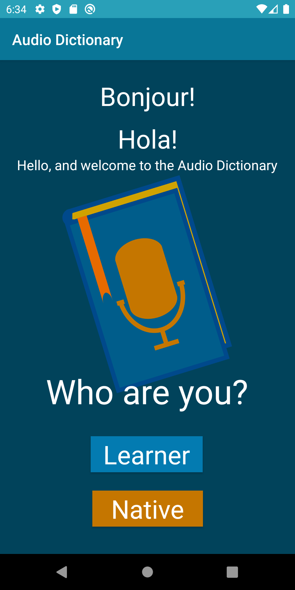
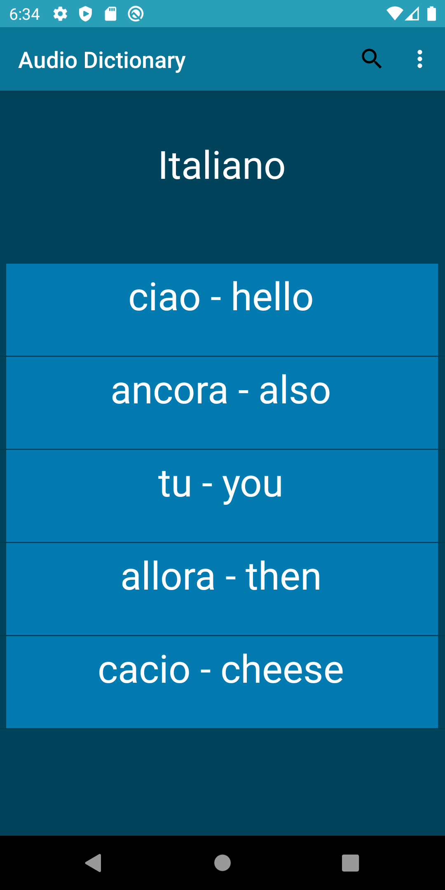
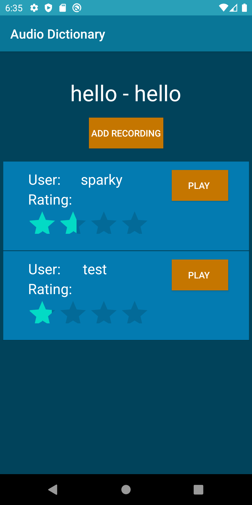
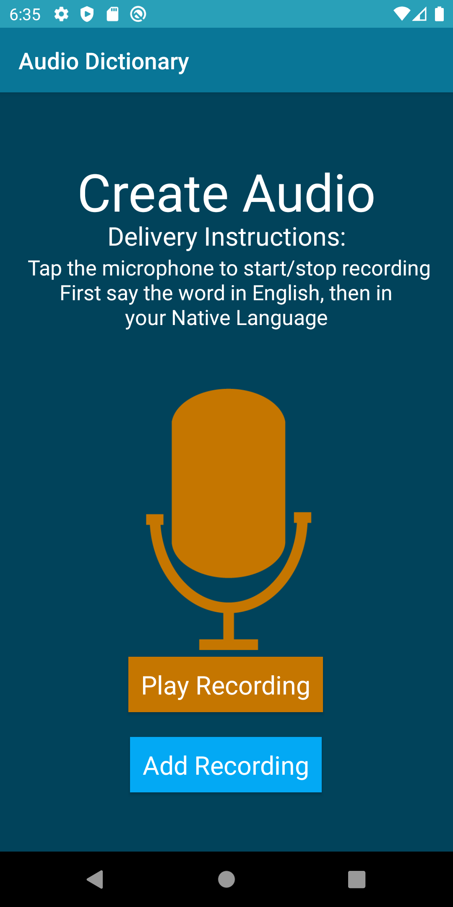

|
Audio Dictionary |
| External link to audio_dictionary.apk |
| Source (.zip) |
| This app allows native speakers of a
particular language to record themselves pronouncing words for
English-speaking language learners and attach them to an entry in a
translation dictionary. Native speakers also have the ability to rate
others' recordings in order to recommend or dissuade against the
pronunciation in the audio. |
| screenshot1  |
screenshot2  |
| screenshot3  |
screenshot4  |
| External link to YouTube video |
List of external libraries and code used in this project:- Firebase Realtime Database – for storing the dictionaries and users
- Firebase Storage – for storing the audio recordings
- https://developer.android.com
- Dr.Porter's Lecture Examples: AudioVideoAudioRecording
- CMSC436 Fall 2020 Lab7-Firebase Code
|